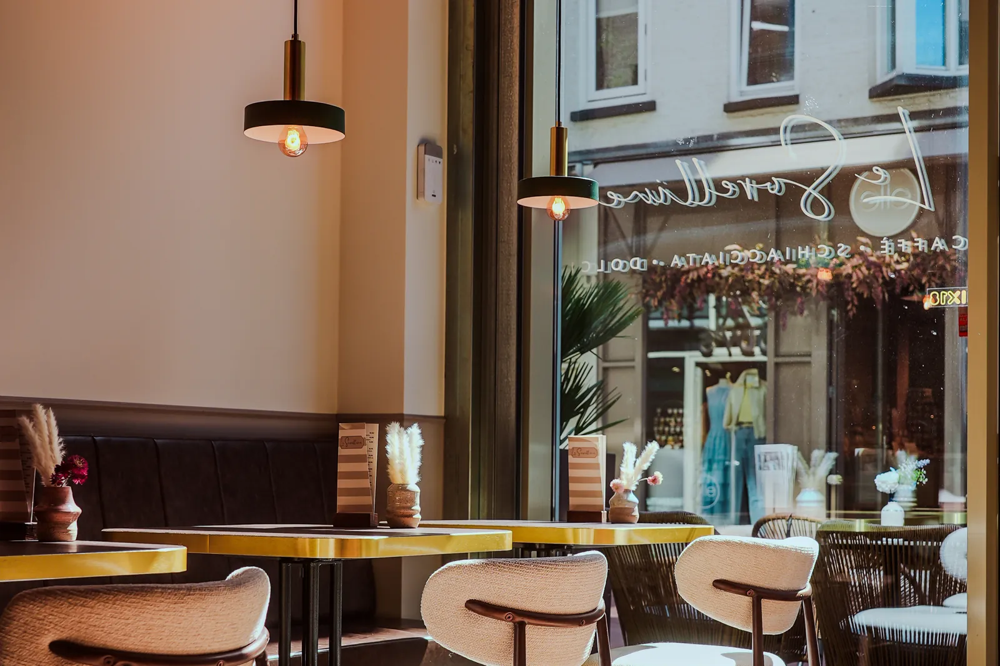
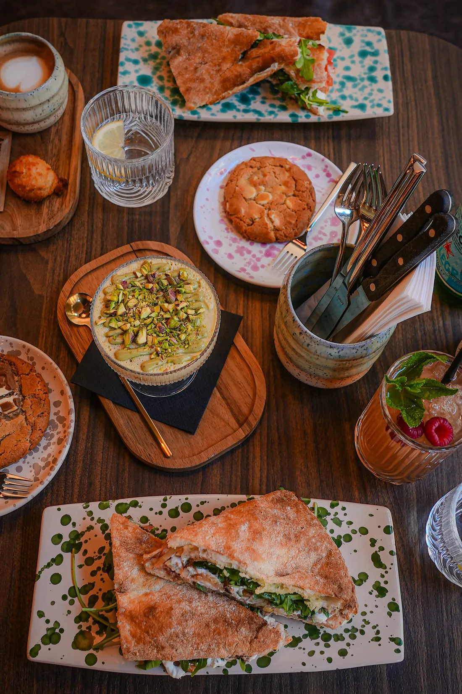
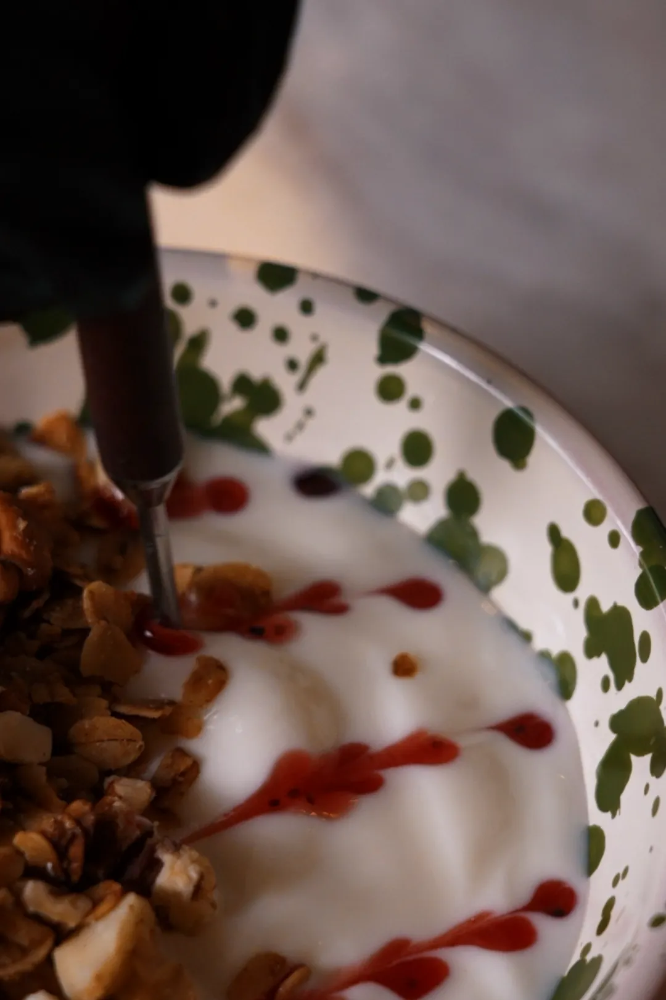
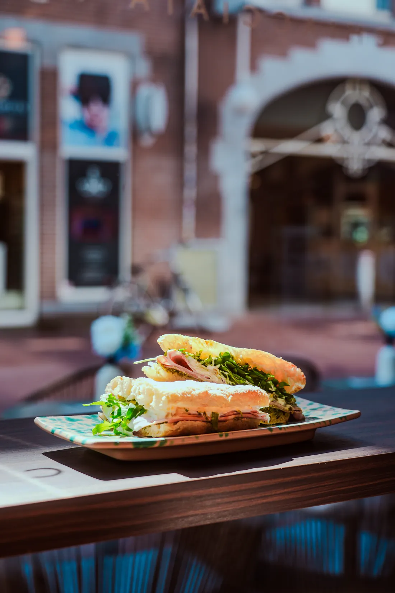
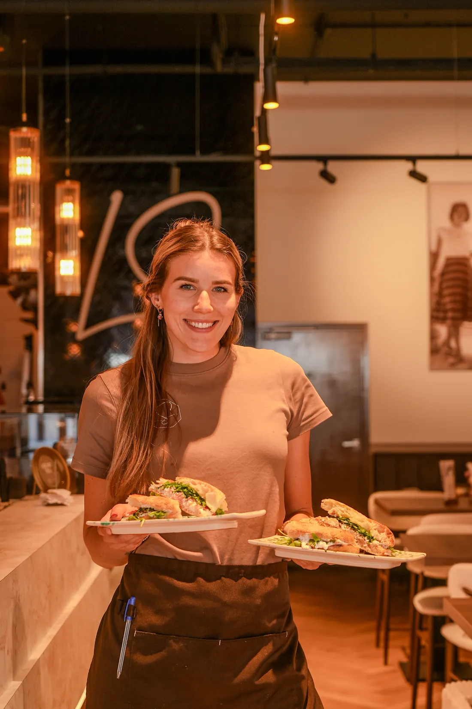

Een Italiaanse tafel
in Nederland.
Een lunchroom in Eindhoven die Italiaans kookt en Italiaans oogt, en beeld nodig had dat er ook naar smaakt.
- Merkfilm
- Verticals voor dagelijkse plaatsing
- Beeldbank voor menu, web en pers
- Volledige gebruiksrechten
Foodfotografie gaat mis op het moment dat het op een menukaart begint te lijken. De borden hier zijn goed genoeg om geen hulp nodig te hebben — wat ze wél nodig hebben is de ruimte eromheen: het middaglicht door de pui, het geluid van een volle tafel, het moment vlak voordat iemand zijn vork pakt.
Gedraaid tijdens de bediening, zonder ensceneren. De camera werkt om de keuken heen in plaats van andersom, zodat wat er in beeld belandt de zaak is zoals gasten hem werkelijk tegenkomen.
Opgeleverd als merkfilm, verticals voor dagelijkse plaatsing, en een beeldbank voor menukaart, website en pers.




De borden hebben geen hulp nodig.
Ze hebben de ruimte eromheen nodig.